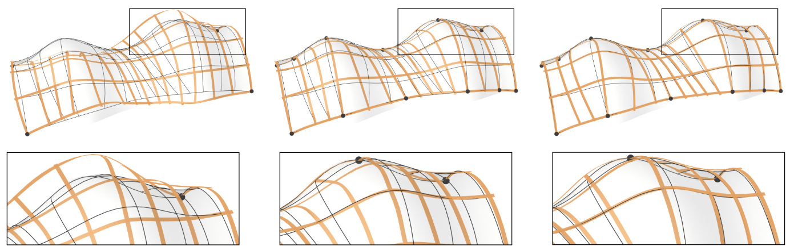
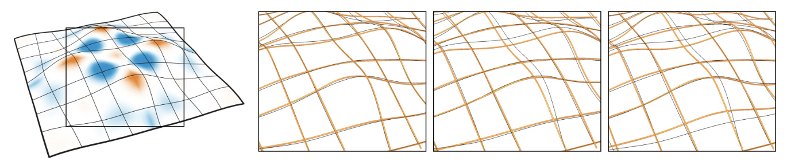

To simulate the physical behavior of the deployed grid, we use a simulation based on discrete elastic rods [Bergou et al. 2010] and build upon the solution of [Vekhter et al. 2019]. We refer the reader to those papers for the details. Note, that the associated material frames of the rods do not need to be isotropic, which allows us also to model the exact cross sections of lamellas with a ratio of 1 : 10.
A central aspect of the kinematics of elastic geodesic grids is the ability of grid members to slide at connections, denoted in the following as ${\proselabel{elastic}{{q}}}$. In general, they do not coincide with the vertices of the discretized grid members. To handle them, we introduce barycentric coordinates ${\prosedeflabel{elastic}{{β_q}}}$ to describe the location of a connection on a rod-edge . We also take the physical thickness ${\proselabel{elastic}{{t}}}$ of the lamellas into account, which is modeled by an offset between the members $g$ and $h$ at each connection. Hence, a connection ${\proselabel{elastic}{{q}}}$ consists of two points ${\proselabel{elastic}{{q_g}}}$ and ${\proselabel{elastic}{{q_h}}}$ with an offset ${\proselabel{elastic}{{t}}}$. Apart from sliding, members are allowed to rotate around connections about an axis that is parallel to the cross product of the edges ${\proselabel{elastic}{{q_g}}}$ and ${\proselabel{elastic}{{q_h}}}$ lie on.
Simulation. Our aim is to find the equilibrium state of the given elastic grid, which corresponds to an optimization problem of minimizing the energy functional
where ${\prosedeflabel{elastic}{{E_r}}}$ is the internal energy of the rods , ${\prosedeflabel{elastic}{{E_q}}}$ is the energy of the connection constraints , ${\prosedeflabel{elastic}{{E_a}}}$ is the energy of the anchor constraints , ${\prosedeflabel{elastic}{{E_n}}}$ is the energy of the notch-limit constraints , and ${\prosedeflabel{elastic}{{E_p}}}$ is an additional notch penalty term that also serves to account for friction . We perform the simulation by minimizing the entire energy ${\prosedeflabel{elastic}{{E}}}$ for the rod centerline points $x$ using a Gauss-Newton method in a similar fashion as proposed by Vekhter et al. [2019]. In Section 6.2 we perform an empirical evaluation of the accuracy of the simulation by comparing it to laser-scans of the makes.

Fig. 10. The influence of anchors and notches on the example Archway. Left: Anchors at the corners are not sufficient to push the grid into the right configuration. Center: Deployed state without notches, local buckling and irregularities in smoothness can be observed. Right: Notches relax the structure to a more natural, lower energy shape (cf. Sections 4.5 and 4.6).
For the sake of readability, we will define the constraint energy terms only for a single constraint each. Er is the sum of stretching, bending and twisting energies of each individual rod. As a full explanation of the DER formulation is out of scope for this paper, we refer the reader to the work of [Bergou et al. 2010] for a detailed description of these terms.
The connection constraint energy ${\proselabel{elastic}{{E_q}}}$ is given by
with ${\proselabel{elastic}{{m_g}}}$ and ${\proselabel{elastic}{{m_h}}}$ denoting the material vectors of $g$ and $h$ at ${\proselabel{elastic}{{q}}}$ respectively. The term $tm$ accounts for the thickness of the rods, while ${\proselabel{elastic}{{λ_{q,1}}}}$ and ${\proselabel{elastic}{{λ_{q,2}}}}$ are the constraint weights for the position and direction terms.
The anchor constraint energy ${\proselabel{elastic}{{E_a}}}$ ensures that both the position ${\proselabel{elastic}{{q}}}$ and material vector ${\proselabel{elastic}{{m}}}$ of the given connection do not deviate from the position ${\proselabel{elastic}{{q_a}}}$ and material vector ${\proselabel{elastic}{{m_a}}}$ of the corresponding anchor. It is given by
with ${\proselabel{elastic}{{λ_{a,1}}}}$ and ${\proselabel{elastic}{{λ_{a,2}}}}$ as weights. This constraint applies to the grid corners and anchors.
The notch-limit constraint energy ${\prosedeflabel{elastic}{{E_n}}}$ ensures that the connection point remains within the bounds of the notch. They are specified by the notch length l and the sliding direction (cf. Section 4.5):
with ${\proselabel{elastic}{{β^{(−)}}}}$ and ${\proselabel{elastic}{{β^{(+)}}}}$ denoting the barycentric coordinates of the notch bounds on their corresponding edges. The term is only active when the connection lies on the same rod-edge as one of the notch bounds, so ${\proselabel{elastic}{{δ^{(−)}}}} = 1$ or ${\proselabel{elastic}{{δ^{(+)}}}} = 1$ when the connection lies on one of these edges, and 0 otherwise.
The additional notch penalty term ${\proselabel{elastic}{{E_p}}}$ controls the movement of a connection q between two adjacent edges. If ${\proselabel{elastic}{{q}}}$ switches edges, it needs to be reprojected to the neighboring edge at the next iteration of the simulation. Within an iteration, ${\proselabel{elastic}{{E_p}}}$ prevents ${\proselabel{elastic}{{q}}}$ from moving too far beyond the end of the current edge:
with ${\prosedeflabel{elastic}{{ε}}}$ denoting how far ${\proselabel{elastic}{{q}}}$ is allowed to move past the end of the edge and ${\prosedeflabel{elastic}{{μ}}}$ acting as a weighting parameter (we choose ${\proselabel{elastic}{{ε}}} = 0.0001$, ${\proselabel{elastic}{{μ}}} = 0.1$).

Fig. 11. The effect of the weighting parameter ${\proselabel{elastic}{{μ}}}$ in ${\proselabel{elastic}{{E_p}}}$ (from left to right): surface shaded with K and geodesics; ${\proselabel{elastic}{{μ}}} = 0.01$, rods slide onto geodesics; ${\proselabel{elastic}{{μ}}} = 0.1$, sliding in high $K$ areas reduced (our setting); ${\proselabel{elastic}{{μ}}} = 1$, sliding is heavily reduced. Refer to Section 7.3 for a further discussion on ${\proselabel{elastic}{{μ}}}$.
Since ${\proselabel{elastic}{{E_p}}}$ is not 0 even inside the edge, it penalizes very small sliding movements that would otherwise accumulate over many iterations. In other words, ${\proselabel{elastic}{{E_p}}}$ creates a pseudo-frictional effect, which is controlled by ${\proselabel{elastic}{{μ}}}$. In a physical grid, friction creates a force acting against the sliding movement of a connection. If the driving force of the movement and the frictional force counterbalance, the movement stops. This situation has an analogy in our grids. A connection stops moving inside a notch if